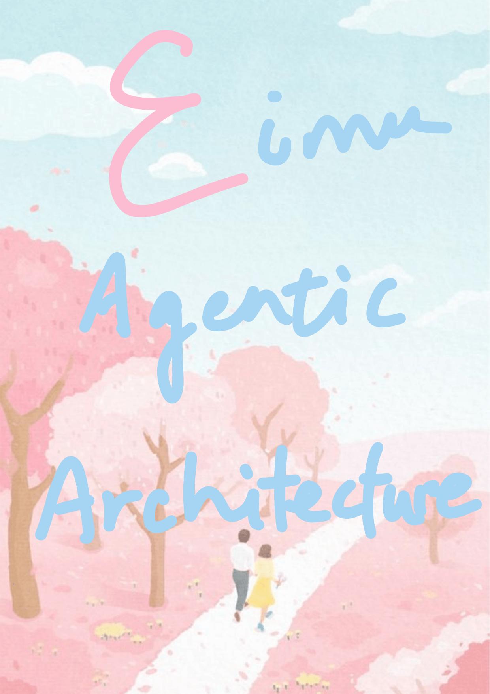
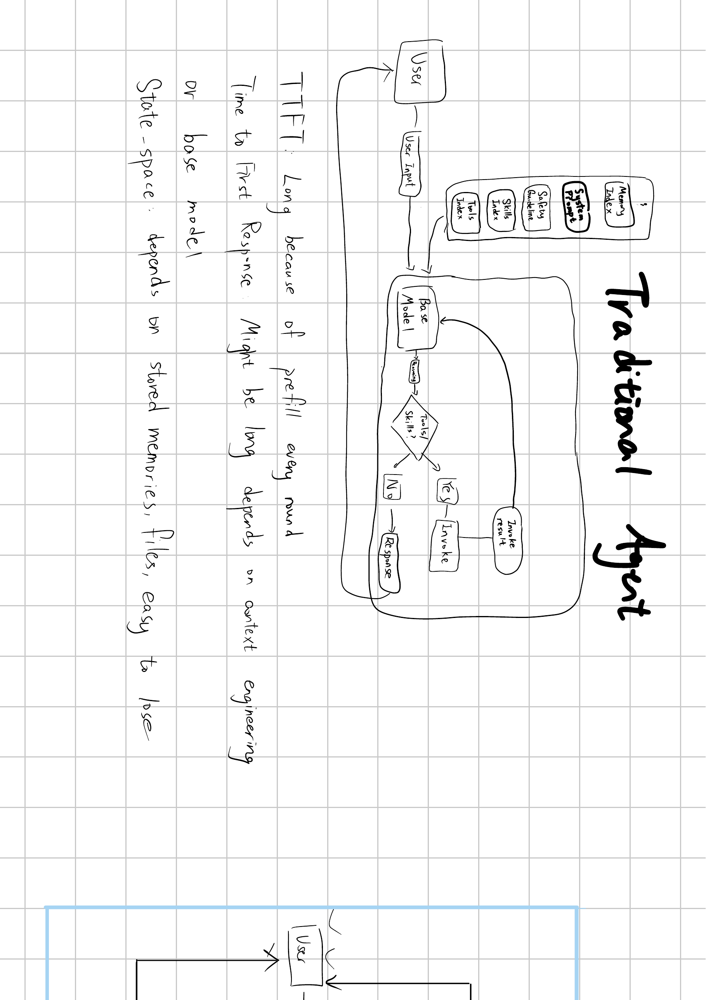
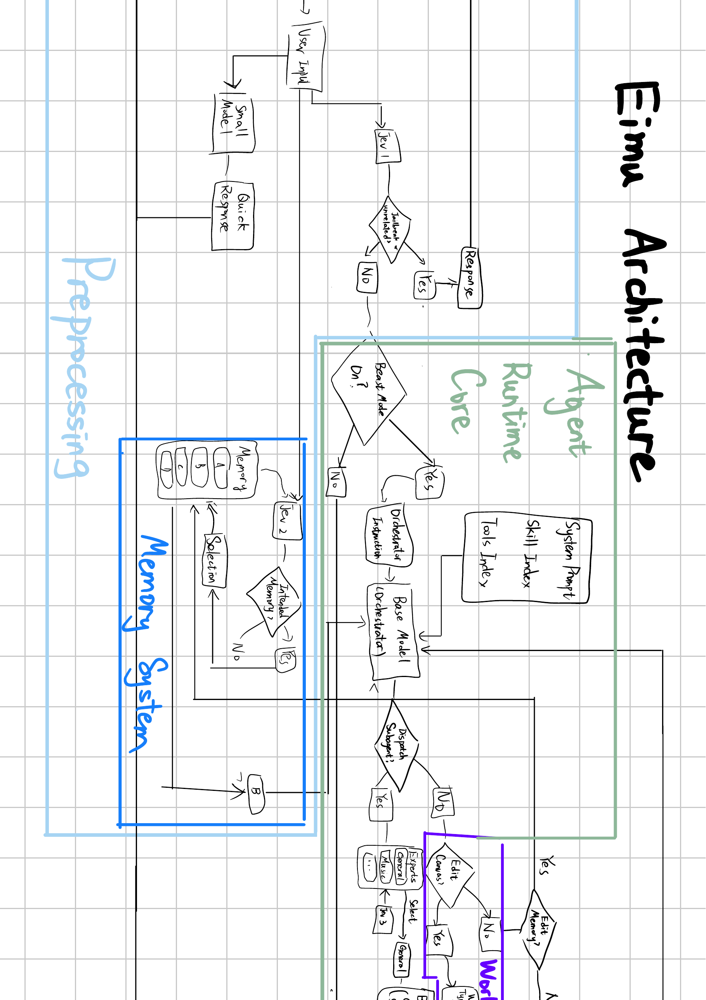
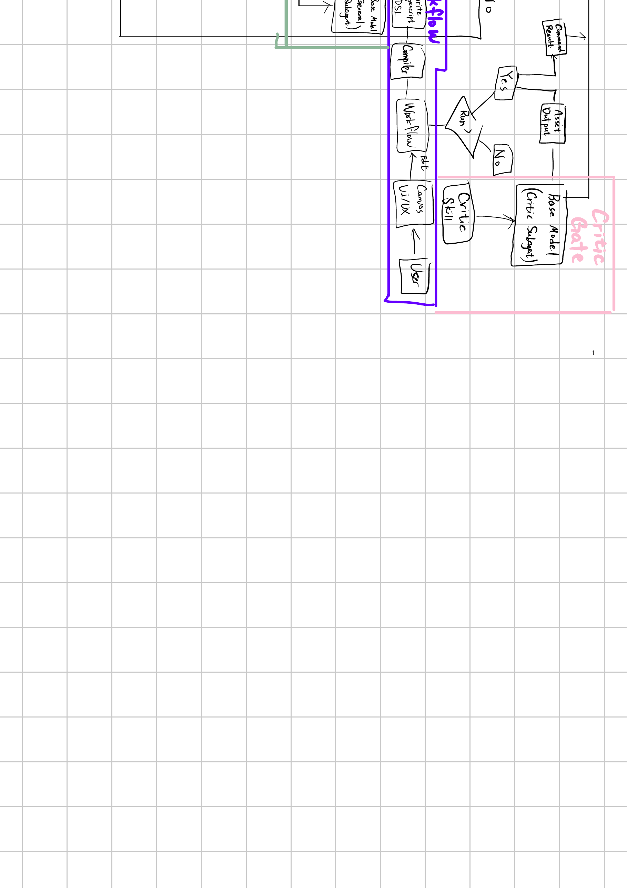

一张嘴、一包上下文、自己转圈。对照你手绘第 2 页。

原图（PDF p2）
预处理 · 记忆 · Runtime Core · 派专家。对照你手绘第 3 页主图。

原图（PDF p3）
Canvas 是模块，不是单点。对照你手绘第 4 页。

原图（PDF p4）
来源：用户手绘 PDF《Eimu Architecture》（5 页：封面 / Traditional Agent / Eimu Architecture 主图 / WorkFlow+Critic Gate / 空白格纸）。下文按图意写成自然叙述，供记忆与对外讲解；不把计费／中控写进这条 agent 架构线。
---
这不是一张技术封面，而是产品气质声明：Eimu 要把「Agentic Architecture」做成可感知的创作系统——有人味、有场景、有从一句输入走到成片的完整编排，而不只是又一个聊天框套模型。
---
传统路径很短：用户开口 → 用户输入进入 Base Model。模型每轮都要带着一大包常驻上下文一起跑——Memory Index、System Prompt、Safety Guideline、Skills Index、Tools Index 几乎整包预填。模型先推理，再问自己要不要 Tools/Skills：要，就 Invoke，拿 Invoke result 再塞回 Base Model；不要，就直接 Response 回用户。
这套结构的痛点也写在页边：TTFT 往往很长，因为每轮都在做大包 prefill，长短还取决于上下文工程；状态空间靠会话里的记忆和文件硬扛，容易丢、难接续。本质是**同一个会话里自己想、自己调工具、自己收口**，没有强制换手，也没有把「产线表面」从聊天里拆出来。
---
Eimu 主图把系统拆成几块彩色区域，而不是一条单循环。
**预处理（浅色侧栏）。** 用户输入先有一条快路径：Small Model 给出 Quick Response，能快回就快回，不必事事进重型编排。主路上还有 Jev（图上的 Dev/Jev 闸）：先做 jailbreak／无关意图一类判定——该拦就直接 Response，不把脏输入送进 Runtime。
**记忆系统（深蓝区）。** 记忆不是每轮无脑灌进主模型。图里用分层记忆槽（A/B/C/D）表示可选择的记忆面；Jev 再问「是不是意图相关的记忆」：相关才 Selection 选进上下文，不相关就绕开，避免旧记忆污染新创作。选中的记忆再回灌 Orchestrator（图中回环 B）。
**Agent Runtime Core（绿色主区）。** 过闸之后才问 Beast Mode 开不开。开：挂上 Orchestrator Instruction，用 Base Model 当 Orchestrator，并带上本轮需要的 System Prompt、Skill Index、Tools Index（是 Project 包，不是传统那整袋 30KB+ 无脑灌）。然后 Orchestrator 推理，并决定要不要 Dispatch Subagent：要，就选 Experts（General、Music、…），多路并发；不要，就进入 Work／画布侧。
**Work / Canvas（后续页展开）。** 「要不要改画布」是明确分支。要改，就进入人机共笔的 WorkFlow 模块——这不是流程图上的一个小点，而是一整块表面：agent 一侧可以是 agent edit → typescript → dsl → compile → 落到 visible canvas；人一侧从 Canvas / UI/UX 做 Human Edit，改的是同一块可见表面。编译后问 Run?：要跑才出 Command Result / Asset Output。
**Critic Gate（粉区）。** 独立的 Critic Subagent（Base Model + Critic Skill）参与 Run? 的裁决。过了才放行资产与命令结果；不过就打回再改。这和传统「同一张嘴自夸过了」不是一类东西。
整条语义可以压成：
快回／拦脏输入 → 按意图选记忆 → Beast 武装 Orchestrator → 派专家军团或进入画布共笔 → Critic 换手放行。
相对传统页，Eimu 优化的是：预填变「意图后的包」；长活变「子代理与画布模块」；收口变「机器 Critic」，而不是把一切继续塞进一个 Base Model 环。
---
手绘图是产品／架构语义真源。工程上还有 turn 尾野兽帧、context-slim、写穿闸等实现细节；对外讲架构时，应优先用本叙述的分层与模块语言，而不是用实现函数名替换用户页上的词。